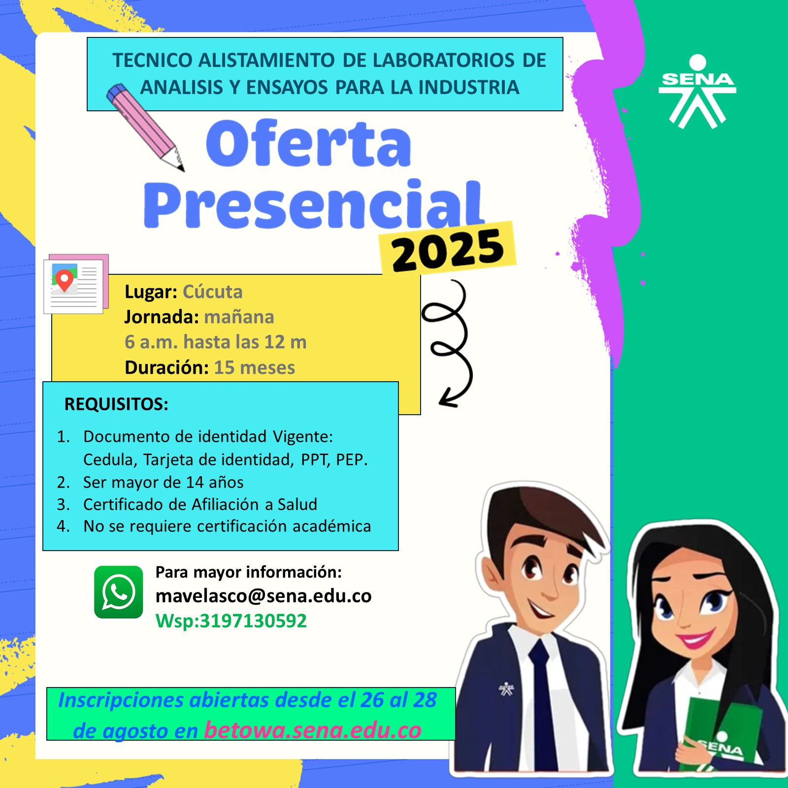

Técnico en Alistamiento de Laboratorios de Análisis y Ensayos para la Industria
Acerca del Programa 📚
El programa del SENA te forma con altas cualidades profesionales para la industria. Con 2208 horas de formación (9 meses de etapa lectiva y 6 meses de etapa productiva) estarás listo para enfrentar los desafíos del sector y garantizar la calidad en cada proceso.

Puntos Fuertes del Programa 💡
Alta Oportunidad Laboral: La industria necesita profesionales como tú. Existe una gran demanda de técnicos de laboratorio.
Formación de Calidad: Aprende a través de proyectos reales y metodologías activas que simulan el entorno de trabajo.
Tecnología de Vanguardia: Te entrenamos en el uso de equipos especializados como espectrómetros, balanzas de precisión y microscopios, en laboratorios dotados para tu formación.
Conocimiento Especializado: Adquiere destrezas únicas en preparación de muestras, gestión de residuos peligrosos y control ambiental.
Video Informativo ▶️
Conoce de cerca lo que te espera en el programa "Técnico en Alistamiento de Laboratorios". Experiencia práctica en un entorno real de laboratorio.
Ventajas para Ti 🚀
Entrada Directa al Mercado Laboral: Serás un profesional idóneo, listo para el manejo y cuidado de laboratorios.
Impulsa tu Emprendimiento: Obtén las bases para desarrollar tus propios proyectos en la industria.
Impacto en tu Comunidad: Aplica tus conocimientos para mejorar la calidad de vida a través de proyectos ambientales y de saneamiento.
Ruta de Crecimiento: Este programa es la puerta de entrada para continuar tu formación en otras especialidades y participar en procesos de investigación.
¡Tu carrera te espera!
Asegura tu futuro con el SENA. Formación gratuita y de calidad.